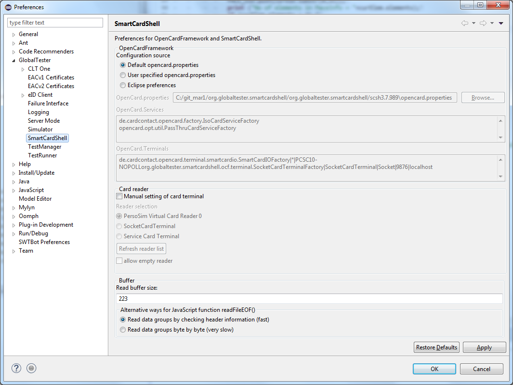

In this preference page you can configure your SmartCardShell. The first group of options allows you to change your OpenCard.properties. You can use the default one, select a custom file from the file system or just change the values directly in the preference.
In the middle option group you can select which card terminal will be used during the tests or if it should be automatically determined.
The last option group allows you to change the behaviour of the GlobalTester when reading binaries by chaning the buffer settings.
